Medusa：一次权重读取，能提交多少个 Token？
Medusa: Simple LLM Inference Acceleration Framework with Multiple Decoding Heads
Tianle Cai、Yuhong Li（共同一作）、Zhengyang Geng、Hongwu Peng、Jason D. Lee、Deming Chen、Tri Dao。机构：Princeton University、Together AI、UIUC、Carnegie Mellon University、University of Connecticut。ICML 2024，PMLR 235，5209–5235。初稿 2024-01-19；本次精读严格采用 arXiv 2401.10774v3，2024-06-14，27 页。阅读与更新：2026-10-27。
Paper PDF · arXiv · Publisher · DOI · Official code · Project / author blog
TL;DR：用更多候选，换更少串行轮次
一句话： Medusa 在同一个 LLM 的最后隐藏状态上增加多个未来位置预测头，把候选组织成树，一次主模型 forward 验证多条路径，再只提交合法的最长前缀。
一段话： 小 batch 的 autoregressive decode 经常花大量时间读权重，却只生成一个 token。Medusa 利用这部分算力余量，多算一些可能被接受的未来 token，以减少主模型串行调用。Medusa-1 冻结 backbone，Medusa-2 联合训练 backbone 和预测头；tree attention 避免候选之间污染上下文，稀疏树减少无效验证，typical acceptance 则用分布放宽换接受长度。论文的 Vicuna-7B/13B Medusa-2 在 MT-Bench 达到约 2.83× 相对默认基线的 wall-time speedup。该结果有明确模型、实现和质量条件，不能直接外推为今天所有服务或端侧 NPU 的收益。
五个关键点：
- 省的是主模型轮次，不是每轮 FLOPs。 多 token 验证让矩阵更大，但有望摊薄权重读取。
- 多个 head 共享输入，不是彼此自回归。 它们预测未来位置的边缘分布，缺少草稿 token 之间的条件依赖。
- tree mask 和 position ID 都属于正确性。 同层兄弟不可互看，RoPE 位置取路径深度，不能取展平索引。
- 加速率与 speedup 是两种量。 前者是 token/轮，后者还要除以每轮额外成本。
- 质量保证要拆开判断。 冻结、联合训练、greedy verification、严格 rejection sampling、typical acceptance 的保证各不相同。
面向熟悉 Transformer、KV cache 与 TTFT/TPOT 的工程师。先按原论文章节重构方法，再读全部附录、23 张原图和 8 张完整原表，最后讨论 2026 年技术演进和可迁移实现。青绿色提示为本精读的分析，黄色提示为限制或原文需澄清之处；原论文、外部资料和分析分别标注。所有 GPU 速度数字均来自来源报告，本次没有复跑 GPU benchmark。
1. Introduction：权重很大，每轮产出很少
作者的问题。 LLM 的生成是串行依赖链：生成新 token 后，才能更新上下文并运行下一步。KV cache 缓存已计算的 K/V，免去重算历史，却不免去每一层投影和 MLP 的权重读取。小 batch 时，单 token GEMV/GEMM 的算术强度偏低，GPU 算力往往等待内存。
已有方案。 增大 batch 可以让多个请求共用权重读取，但会增加 KV 占用、调度约束和用户延迟。标准 speculative decoding 则先由小 draft model 生成多步，再由 target model 并行验证。它要求便宜而准确的草稿模型，也引入两套模型的加载、缓存与分布匹配问题。Medusa 将 drafter 融入 target 的末端表示，沿用 2018 年 blockwise parallel decoding 的思想 [2]，增加 tree verification 和训练策略。
核心观察。 某个未来 token 的 top-1 预测可能不够准，top-k 的覆盖率却更高。通过一次 forward 验证多种组合，有机会接受更长路径。代价是验证所有候选，因此关键任务变成：把有限验证预算放到最可能贡献接受长度的位置。
贡献如何分工。 heads 负责生成，tree attention 负责共享候选前缀，Medusa-2 负责提高可预测性，typical acceptance 负责放宽接受条件，自蒸馏负责补训练数据，稀疏树负责控制工作量。它们分别改变计算、训练和输出契约，不能当成一个天然无损的整体。
![Figure 1 : Medusa introduces multiple heads on top of the last hidden states of the LLM, enabling the prediction of several subsequent tokens in parallel (Section 2.1.1 ).
During inference, each head generates multiple top predictions for its designated position.
These predictions are assembled into candidates, which are processed in parallel using a tree-based attention mechanism (Section 2.1.2 ). The final step is to verify the candidates and accept a continuation. Besides the standard rejection sampling scheme, a typical acceptance scheme (Section 2.3.1 ) can also be used here to select reasonable continuations, and the longest accepted candidate prefix will be used for the next decoding phase.](assets/figures/fig-01.png)
Original caption / source
Figure 1 : Medusa introduces multiple heads on top of the last hidden states of the LLM, enabling the prediction of several subsequent tokens in parallel (Section 2.1.1 ). During inference, each head generates multiple top predictions for its designated position. These predictions are assembled into candidates, which are processed in parallel using a tree-based attention mechanism (Section 2.1.2 ). The final step is to verify the candidates and accept a continuation. Besides the standard rejection sampling scheme, a typical acceptance scheme (Section 2.3.1 ) can also be used here to select reasonable continuations, and the longest accepted candidate prefix will be used for the next decoding phase.
Source paper PDFFigure 1 深读。 从左到右读：LLM 的同一个最后隐藏状态进入原 LM head 与多个 Medusa heads；不同颜色对应不同预测距离；各 head 的高分 token 组成树；主模型以 tree mask 验证；接受器选出最长合法前缀。最后一个已接受节点对应的 hidden/logits 能为下一轮提供草稿，循环复用主模型输出。图里的并行箭头表示候选可同时处理，不能理解为最终输出 token 取消了自回归条件验证。真正减少的是串行验证轮数。
2. Methodology：候选、验证与接受形成状态闭环
方法输入是已提交前缀、对应 KV cache、最后位置的 LM/Medusa logits 和树配置；输出是新提交 token、压实后的 KV、下一轮 logits。主模型仍是最终条件概率的计算者。将“已提交状态”和“候选临时状态”分开，是读懂整个方法的起点。

此图为 Agent-created / Simplified Mermaid diagram。主模型树验证产生临时节点状态，接受后才把一条路径变成真实历史。被拒节点不是下一轮历史；只重写 token 序列而忘记修正 KV 长度，会造成逻辑污染。
2.1.1 Medusa Heads：同时预测多个未来位置
原 LM head 用 h_t 预测 y_(t+1)；第 k 个新增 head 预测 y_(t+k+1)，k 从 1 到 K。因此第一个 Medusa head 预测的是“下下个”token。论文定义：
Copy LaTeX
p_t^{(k)}=\mathrm{softmax}\left(W_2^{(k)}\left(\mathrm{SiLU}(W_1^{(k)}h_t)+h_t\right)\right)其中 h_t 是最后隐藏状态，d 是隐藏宽度，V 是词表大小；p_t^(k) 是 V 维概率向量。W₁ 先把表示变换为 d 维，SiLU 加非线性，再与原 hidden 相加；W₂ 把残差表示投影到词表；softmax 归一化。SiLU(z)=z·sigmoid(z)，残差允许预测头从主模型表示出发逐步偏移。
Tensor orientation 的澄清。 原文同时写 W₂∈R^(d×V) 和左乘 W₂·h；若 h 是列向量，应使用 V×d。工程上采用行向量时，hidden 为 [B,T,d]，W₁ 为 [d,d]，W₂ 为 [d,V]，计算是 (SiLU(h @ W1) + h) @ W2；PyTorch Linear(d,V).weight 存 [V,d]。这是记号方向问题，原式保留，部署 shape 另行明示。
初始化 W₁=0、W₂ 从 LM head 复制，在无偏置的公式下所有新头起初等同于 next-token head，再训练成不同预测距离。官方代码快照的 ResBlock 使用带 bias 的 Linear，只将 weight 清零；bias 未同步归零时，不能从公式推出初始化输出严格相同。这里是源码检查发现的实现差异，未做运行验证。
为什么预测不一定一致？ head 1 和 head 2 都只看到 h_t。head 2 没看到 head 1 最终提出的 token，因此不能直接表示 p(y_(t+3)|prefix,y_(t+1),y_(t+2))。例如 “New” 后同时猜 “York” 和 “City” 很自然，但若某条候选在中间选成了 “Jersey”，同一个远期 “City” 可能不再合适。tree verification 会用每条实际路径重新计算 target 条件分布。
参数与内存不应忽略。 忽略 bias，一个 head 新增 d²+dV 参数；K 个是 K(d²+dV)。以 d=4096、V=32000、K=5 为代数示例，共 739,246,080 参数，FP16 权重约 1.377 GiB。浅层结构确实比完整第二模型简单，但“大词表×多头”仍昂贵；训练梯度、优化器状态、激活与 logits 另算。
官方实现会先在树验证的多个 hidden 上计算 head 输出，再取被接受终点给下一轮使用；全量临时 logits 可以达到 [K,B,q,V]。工程上是否能只对最终需要的 hidden 做投影、跳过冗余头，必须在依赖链允许时单独评估，不能把它当作原论文已经证明的优化。
2.1.2 Tree Attention：共享祖先，隔离兄弟
第 k 个 head 取 top-s_k；完整笛卡尔积得到多条路径。论文给出新增 Medusa 节点数量：
Copy LaTeX
q_M=\sum_{k=1}^{K}\prod_{i=1}^{k}s_i,\qquad q_{\mathrm{physical}}=1+q_M这里 q_M 只统计 Medusa 节点；原 LM head 的根 token 在实际验证中占一个额外位置。s₁=2、s₂=3 时，有 6 个叶子、2+6=8 个 Medusa 节点，物理 forward 为 9 个新位置。逐条复制 6 条“根+两步”路径会处理 18 个位置；树共享根与第一层前缀，避免重复这些位置。
![Figure 2 : We demonstrates the use of tree attention to process multiple candidates concurrently. As exemplified, the top-2 predictions from the first Medusa head and the top-3 from the second result in a total of 2 × 3 = 6 candidates. Each of these candidates corresponds to a distinct branch within the tree structure. To guarantee that each token only accesses its predecessors, we devise an attention mask that exclusively permits attention flow from the current token back to its antecedent tokens. The positional indices for positional encoding are adjusted in line with this structure.](assets/figures/fig-02.png)
Original caption / source
Figure 2 : We demonstrates the use of tree attention to process multiple candidates concurrently. As exemplified, the top-2 predictions from the first Medusa head and the top-3 from the second result in a total of 2 × 3 = 6 candidates. Each of these candidates corresponds to a distinct branch within the tree structure. To guarantee that each token only accesses its predecessors, we devise an attention mask that exclusively permits attention flow from the current token back to its antecedent tokens. The positional indices for positional encoding are adjusted in line with this structure.
Source paper PDFFigure 2 深读。 先看左侧拓扑，再对照右侧 mask。每个查询节点只能看完整 committed prefix、根、自己的祖先和自身；兄弟与其他分支不可见。注意“同一个 token ID”在不同父节点下仍是不同状态，因为历史不同。mask 控制信息流，position IDs 则沿深度递增：prefix_length + depth，根 depth=0；同层节点可以有相同 RoPE 位置，不能用节点展平序号代替。
标准展平因果三角 mask 会让后面的分支读到前面不相关分支，验证概率便不再对应候选路径。反之，一个只允许祖先的 mask，也不一定对应真正稀疏 kernel：通用 attention 可能先计算完整矩阵再屏蔽，语义稀疏与计算稀疏是两回事。
统一工程 shape：Q=[B,H_q,q,D_h]；K/V=[B,H_kv,S+q,D_h]；展开或分组后的 score=[B,H_q,q,S+q]。S 是旧前缀长度，q 包括物理根。与普通 decode 的 q=1 相比，投影/MLP 工作量近似随 q 增加，attention 还要访问 S 个历史状态和树内节点。GQA/MQA 改变 KV head 数，却不消除每个 query 的注意力工作。
选择节点，检查祖先；逐步验证与提交
s₁=2、s₂=3，根 R 与 8 个 Medusa 节点共 9 个位置。点击节点可查看它的 attention 行；下方选择路径与接受深度，再逐步执行。路径的合格长度由你指定，这里演示状态机制，不模拟模型预测性能。
Root R → {A1,A2} → each has {B1,B2,B3}.
绿色表示选中节点可见的祖先，蓝色表示当前查询节点。提交后 KV 只保留指定路径的接受前缀。
KV cache 的提交机制。 临时 KV 在旧长度后保存 q 个位置；选出路径后 gather 这些位置，将其压实到旧前缀末尾，再把所有 layer 的逻辑长度统一改成 old_length + accepted_count。官方代码的 accept_length 是额外 Medusa 前缀长度，提交包含根的 accept_length+1 个位置。未接受的候选可保留在物理缓冲里，但长度指针必须保证它们不可见。
FP16 下，额外候选 KV 字节为 2 × L × B × q × H_kv × D_h × 2。代数示例 L=32、B=1、q=65、H_kv=32、D_h=128 为 32.5 MiB；若 H_kv=8，为 8.125 MiB。这里没有加 head 权重、激活、attention workspace 和完整词表 logits。跨步拒绝后通常不需要回算完整旧前缀，但需要正确维护 cache、RoPE 位置和最后 logits。
2.2.1 Medusa-1：冻结 backbone，只学习未来头
给定训练 token y_(t+k+1)，每个 head 用 cross-entropy 学习该位置；论文 Eq.1：
Copy LaTeX
\mathcal L_{\mathrm{Medusa-1}}=\sum_{k=1}^{K}-\lambda_k\log p_t^{(k)}(y_{t+k+1})λ_k=0.8^k。它降低远期、较难预测 head 在总损失中的权重。训练时对所有有效 t 与 k 聚合，边界位置和 padding 必须 mask；不能在样本末尾读越界标签，也不能把未来 head 训练成同一个 y_(t+1)。输入 hidden 应对 backbone stop-gradient，仅 head 参数更新。
为什么便宜？ 不保存 backbone 反向所需的整套激活，也不为其建立完整优化器状态；可用量化 backbone 产生表示。仍有什么成本？ 主模型 forward、K 个 d→V 投影、head 反向、head optimizer 和 [B,T,V] logits。论文举例：60k ShareGPT 样本、Vicuna-7B、单 A100 PCIe，Medusa-1 训练约 5 小时；这是报告条件，不是每个新模型的固定预算。
冻结只说明训练没有更新 backbone 参数。若推理使用不同量化精度、不同 attention 数值路径，或接受规则放宽输出分布，都不能仅凭“冻结”推出完全相同结果。严谨的无损契约要同时指定目标模型、数值计算和验证器。
2.2.2 Medusa-2：调整表示，让未来更容易被预测
论文 Eq.2：
Copy LaTeX
\mathcal L_{\mathrm{Medusa-2}}=\mathcal L_{\mathrm{LM}}+\lambda_0\mathcal L_{\mathrm{Medusa-1}}L_LM 是 backbone next-token cross-entropy。按公式，λ₀ 乘的是 Medusa loss，而不是 LM loss。正文部分文字称“backbone loss 的 weight”，容易误读。将 head loss 加到共享表示上，使 hidden 既支持下一步，又支持多步预测；它会改变 backbone，因此即使严格验证，保证的也是更新后模型。
三项训练策略共同控制扰动：先训练 heads 的 warmup；backbone 与 head 差分学习率；next-token loss 与未来 loss 联合约束。实测主配置先 Medusa-1 再 Medusa-2，以 QLoRA 更新 backbone；head 学习率是 backbone 的 4 倍。原文 warmup 描述在步骤和参数名上不完全一致，复现时应以 Appendix B.3 的两阶段配置为锚点，而不是随意补出一个未给出的 schedule。
直觉。 冻结 backbone 是在固定表示上拟合未来；联合训练则改变这套表示，让未来头能更好“读出来”。它提高接受长度的同时，也引入质量保持任务。质量接近的 GPT-4 judge 均分是经验支持，不等价于全输入、全分布的数学不变性。
2.2.3 Head 数量：训练上限与实际执行分开
作者经验上建议训练 5 个 head，再按树优化选用 3 或 4 个。远期越不确定，节点预算越容易浪费。若不需要的 head 被真正跳过，其推理开销可以去掉；如果 forward 仍构建所有 head logits 再丢弃，就存在实际开销。“忽略 head”必须落实到执行路径和内存分配。
2.3.1 Typical Acceptance：质量接近与分布相同是两种要求
原规则为：
Copy LaTeX
p_{\mathrm{original}}(x_{n+k}\mid x_{1:n+k-1})>\min\left(\epsilon,\delta\exp\left[-H(p_{\mathrm{original}}(\cdot\mid x_{1:n+k-1}))\right]\right)p_original 是沿真实候选前缀的目标分布；H 是自然对数熵；ε 是硬阈值；δ·exp(−H) 是熵自适应阈值。满足条件的 token 连续组成前缀，首次失败处截断，所有路径中选最长前缀。论文用 greedy 生成第一个根 token并无条件接受，保证每轮有进展；后续 token 用 typical acceptance。
exp(−H) 是“有效支持集大小”的倒数直觉：若 V 个 token 均匀，H=ln V，exp(−H)=1/V。高熵时阈值降低，更多候选可能合格。但某个具体 candidate 的概率也随温度变化，因此温度增大并不数学保证接受长度单调增加。T=0 应明确分支到 greedy，而不是直接计算 logits/T。
关键校正 / 原文 §2.3.1 的例子。 论文称 draft 与 target 相同，独立采样仍会拒绝。这描述的是独立抽样后比对 token，不是标准的严格 speculative rejection sampling [3]。严格接受概率为：
Copy LaTeX
A(x)=\min\left(1,\frac{p(x)}{q_D(x)}\right),\qquad p=q_D\Rightarrow A(x)=1q_D 是该条件下 draft 分布，p 是 target 分布。如果 p=q_D，接受率就是 1；拒绝后从归一化 (p−q_D)_+ 残差分布采样，才能保持目标分布。独立抽样的相同概率是 Σp_i²，均匀 4 类时只有 1/4。温度可能影响实际 draft-target 差异和系统开销，但不能用独立匹配反例证明标准 rejection 本身低效。
典型接受避免了严格残差校正，并偏好树中最长合法路径。这种输出选择会改变概率质量分配，因而不保证与 target 的原采样分布一致。其价值是经验质量/速度折中。不能把它与 Meister 等人的 locally typical sampling 简单视为同一算法；这里使用概率下限及路径接受，原文直接借鉴的是 truncation / η-sampling 方向。
同一分布：三种“接受”意味着什么？
设 p=q_D=softmax([2,1,0,−1]/T)，四个抽象 token。调节温度和 typical 阈值；候选条形展示概率，不生成真实文本。
Typical 的“允许概率质量”仅表示允许集合覆盖了多少 p，不代表最终输出按这些概率采样。T=0 在真实系统应进入 greedy 分支，本实验只取正温度。
这个代数实验把两种接受含义摆在同一分布上：严格 rejection 在 p=q_D 时始终接受；独立匹配会因分布平坦而下降；typical acceptance 只决定允许哪些 token，不给出输出分布无损证明。
| 配置 | 与什么保持一致 | 保证条件 / 限制 |
|---|---|---|
| Medusa-1 + greedy verifier | 固定 target 的 greedy token 路径 | target 数值语义一致；每步验证到首个 mismatch |
| Medusa-1 + 严格 rejection | 固定 target 的采样分布 | 正确的 proposal、accept/reject 与残差；不是同 seed 路径必然相同 |
| Medusa-1 + typical | 经验质量可能接近 | 冻结不恢复分布等价 |
| Medusa-2 + 严格验证 | 更新后的 target | 不是微调前的原模型 |
| Medusa-2 + typical | 更新模型的放宽输出策略 | 同时有模型变化和采样契约变化 |
2.3.2 Self-Distillation：没有原始 SFT 数据时怎么办
先从领域相近的公开 prompts 出发，让原模型生成回答；多轮可以逐轮喂入 seed 用户问题，也可以由具备两角色生成能力的模型 self-talk。Medusa-1 用生成的 hard token 标签训练 heads，避免只依赖不匹配的外部回答。
Medusa-2 若连 backbone 也只用生成 token 做 SFT，可能丢失原分布细节；论文改用 teacher 对整个词表的概率约束：
Copy LaTeX
\mathcal L_{\mathrm{LM-distill}}=D_{\mathrm{KL}}\left(p_{\mathrm{original},t}^{(0)}\Vert p_t^{(0)}\right)这是 KL(teacher || student)。逐词 KL 对 [B,T,V] 概率求和，再沿有效 token 聚合；teacher stop-gradient。它同时保存正确 token 的相对概率和其他合理候选，而不只是让 student 增大某个抽到的 hard label。不要颠倒 KL 方向。
共享权重技巧。 student 使用 LoRA，关闭 adapter 即得到 teacher。这样省掉第二份完整 backbone 权重；不表示省掉 teacher forward、soft logits、额外激活生命周期和 adapter/optimizer 内存。若 teacher 也是量化版，保持的是量化 teacher 的分布，不能据此认为恢复了未量化原模型。作者建议蒸馏时优先非量化 LoRA。
2.3.3 Optimized Tree：按 rank 的边际命中率分配预算
令 a_k^(i) 为 head k 的第 i 名 token 单独命中率，即 top-i accuracy − top-(i−1) accuracy。它不是累积 top-i accuracy。独立假设下，一个 rank 路径的权重为：
Copy LaTeX
w(i_1,\ldots,i_k)=\prod_{j=1}^{k}a_j^{(i_j)},\qquad \widehat{\mathbb E[\ell]}=\sum_{(i_1,\ldots,i_k)\in I}\prod_{j=1}^{k}a_j^{(i_j)}所有深度的节点都算入 I；一个节点被加入时，贡献是其路径概率乘积。用 frontier greedy，每次从连接现有树的可扩展节点中取最大权重，直到预算耗尽。必须 prefix-closed：选远期节点前，它的祖先应已存在。
为何比均匀树好？ head 深度和 rank 的命中率不平衡。把第 1 head 的第 1 名后面多扩几条，常常比平等扩展低概率早期分支更划算。校准误差、条件相关性与分布漂移则可能改变优先级；树是离线固定的预算分配，不是线上每个上下文都自适应。
目标函数的边界。 对 greedy 的单一正确路径、准确概率和独立近似，它可以作为接受长度的代理。typical 允许多条路径重叠且最终取最长时，求和并不严格等于最长接受长度期望；不能把此近似目标当成真实系统最优性的证明。
3. Experiments：先统一指标，再看收益
作者以 MT-Bench 多类别对话做主要速度与质量评估，比较默认 autoregressive baseline、标准 speculative decoding、Medusa-1 和 Medusa-2。下面保留全部原始表格与原图。原表图片保留原版排版和 caption；可展开的全文转录保留所有行列及数值，移动端横向滚动。
指标字典。 Acc. rate 是每轮平均提交 token 数，单位 token/轮，通常包括根；不是概率或分类准确率。Overhead 是 Medusa 一轮与普通一轮的时间比。Speedup 是 baseline 与 Medusa 生成速度之比。Quality 是 MT-Bench 的 GPT-4 judge 均分（越高越好），不是 Accuracy。该任务没有 TP/FP/TN/FN 定义，不能人为拼一张 confusion matrix。
Copy LaTeX
\mathrm{speedup}\approx\frac{\mathbb E[\mathrm{accepted\ tokens/cycle}]}{\mathrm{iteration\ overhead}}此式用于解释和粗略核验；聚合方式、输出长度和四舍五入可导致与表值略不同。单轮算得更慢并不矛盾：如果每轮时间是 1.22 倍、接受 3.47 token，则速度大约为 2.84 倍。speedup 不是接受率本身。
3.1 Vicuna-7B/13B：冻结与联合训练的差别

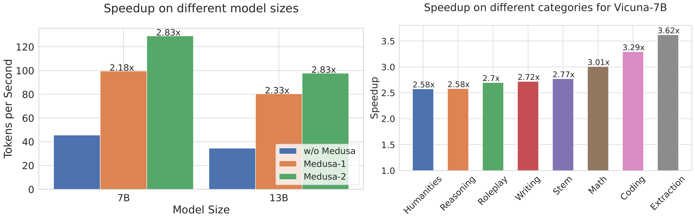
Original caption / source
Figure 3 : Left: Speed comparison of baseline, Medusa -1 and Medusa -2 on Vicuna-7B/13B. Medusa -1 achieves more than 2 × wall-time speedup compared to the baseline implementation while Medusa -2 further improves the speedup by a significant margin. Right: Detailed speedup performance of Vicuna-7B with Medusa -2 on 8 categories from MT-Bench.
Source paper PDFFigure 3 深读。 左图同时看 7B 和 13B 的 baseline、Medusa-1、Medusa-2。论文报告 Medusa-1 约 2.18×（7B）、2.33×（13B），Medusa-2 两者约 2.83×；联合训练相对冻结方案增加约 29.8% 和 21.5% 的速度收益。右图是 8 个 MT-Bench 类别，coding/math 等规律性更强的 continuation 更容易被未来 heads 命中。类别差异说明草稿可预测性影响效果，不能只看整体柱。
这里的 baseline 是论文默认实现，不能直接替换成今日优化服务引擎。更强 baseline 可能减少可摊薄时间，量化也可能转移瓶颈；加速比与 kernel、shape、采样策略和 hardware 共同决定。

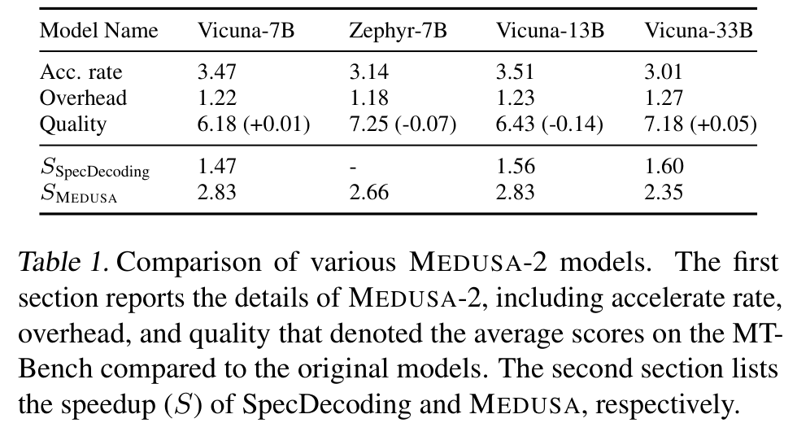
Original caption / source
Table 1 : Comparison of various Medusa -2 models. The first section reports the details of Medusa -2, including accelerate rate, overhead, and quality that denoted the average scores on the MT-Bench compared to the original models. The second section lists the speedup ( S ) of SpecDecoding and Medusa , respectively.
Source paper PDFTable 1 · Full original values / 全表转录
| Model Name | Vicuna-7B | Zephyr-7B | Vicuna-13B | Vicuna-33B |
|---|---|---|---|---|
| Acc. rate | 3.47 | 3.14 | 3.51 | 3.01 |
| Overhead | 1.22 | 1.18 | 1.23 | 1.27 |
| Quality | 6.18 (+0.01) | 7.25 (-0.07) | 6.43 (-0.14) | 7.18 (+0.05) |
| 1.47 | - | 1.56 | 1.60 | |
| 2.83 | 2.66 | 2.83 | 2.35 |
Table 1 深读。 四列分别对应 Vicuna-7B、Zephyr-7B、Vicuna-13B、Vicuna-33B。Medusa-2 的 speedup 为 2.83、2.66、2.83、2.35；相对标准 speculative baseline 的比值为约 1.925、未报告、1.814、1.469。以普通 baseline 为 1，7B 的 +183% throughput 与 64.7% 的等产出时间下降是不同写法，不要把两者混用。
3.47/1.22≈2.844，3.14/1.18≈2.661，3.51/1.23≈2.854，3.01/1.27≈2.370，与 speedup 小幅出入主要只能说明表值经过汇总/舍入，不能倒推出未公开的单样本计时。Quality 的差值是 +0.01、−0.07、−0.14、+0.05 分；13B 的 −0.14 不应被省略。没有多 seed、置信区间或 judge 稳定性分析，不能宣布“零质量损失”。
3.2 Self-Distillation：跨模型成立，收益也有差异
Zephyr-7B 和 Vicuna-33B 用自蒸馏训练，Table 1 显示有明显加速，并维持接近原模型的 MT-Bench 均分。33B 的接受量 3.01、overhead 1.27，高于 7B 的相对每轮成本，最终 speedup 仅 2.35。规模越大不意味着比例收益必然越大；接受质量、head 规模、attention 历史、kernel 利用率和训练约束都在作用。
自蒸馏解决“不提供原 SFT 回答”的问题，没有证明对所有领域、对齐策略和任务迁移都保持质量。公开 prompt 的覆盖、生成风格、multi-turn 分布与 teacher 精度仍是训练数据问题。
3.3.1 Tree Structure Ablation：64 个有价值节点优于更多无效节点
![Figure 4 : Effectiveness of numbers of candidate tokens for decoding introduced by trees (default number of candidate token for decoding is 1 when using KV cache). Left: The acceleration rate for randomly sampled dense tree settings (blue dots) and optimized sparse tree settings (red stars). Right: The speed (tokens/s) for both settings. The trend lines indicate that while the acceleration rate remains relatively stable for sparse trees, there is a notable decrease in speed as the candidate tokens increases.](assets/figures/fig-04.png)
Original caption / source
Figure 4 : Effectiveness of numbers of candidate tokens for decoding introduced by trees (default number of candidate token for decoding is 1 when using KV cache). Left: The acceleration rate for randomly sampled dense tree settings (blue dots) and optimized sparse tree settings (red stars). Right: The speed (tokens/s) for both settings. The trend lines indicate that while the acceleration rate remains relatively stable for sparse trees, there is a notable decrease in speed as the candidate tokens increases.
Source paper PDFFigure 4 深读。 左图纵轴是 acc. rate，右图纵轴是 tokens/s，两者不能混为一张速度曲线。蓝点为随机 dense 树配置，红星为优化 sparse 配置。64 节点稀疏树可以获得不逊于、更好的接受长度，相比 256 节点 dense 树避免大量低价值验证。沿右图继续增加候选，速度可能下降：接受长度的收益趋于饱和，验证成本继续增长。
因此树预算应优化 E[accepted tokens] / iteration latency；单独最大化节点数、top-k 覆盖率或 acc. rate 都不够。图上的趋势线提供经验关系，没有证明固定 64 节点是任意模型/上下文/硬件的最优值。
3.3.2 Typical Threshold Ablation：把两个纵轴同时读完

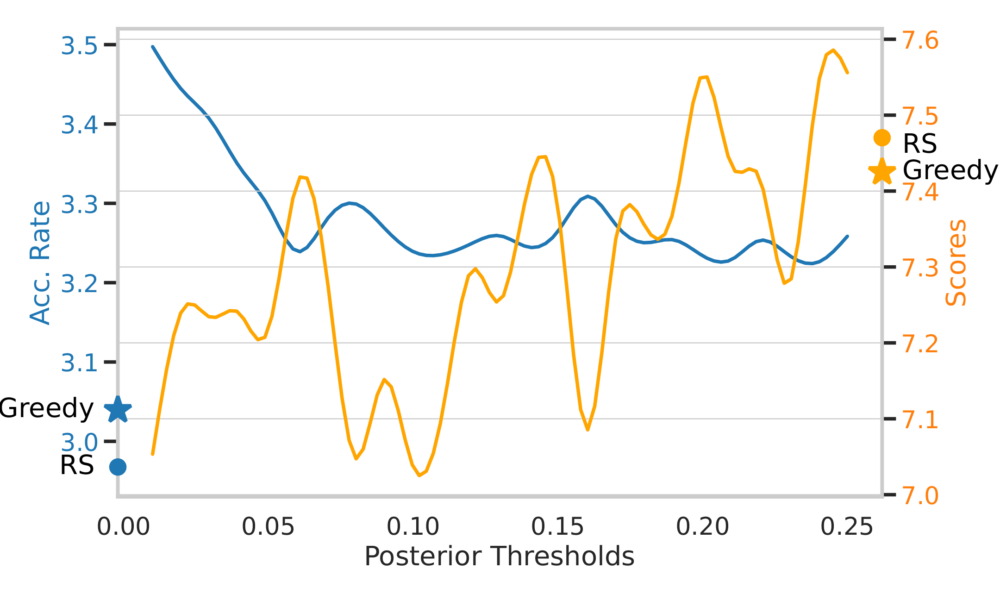
Original caption / source
Figure 5 : Performance comparison of Medusa using proposed typical sampling. The model is fully fine-tuned from Vicuna-7B. The plot illustrates the acceleration rate and average scores on the writing and roleplay (MT-Bench) with a fixed temperature of 0.7 for 3 different settings: greedy sampling and random sampling (RS) plotted as the star and the dot, and typical sampling curves under different thresholds.
Source paper PDFFigure 5 深读。 温度固定 0.7，评估 writing 与 roleplay。横轴阈值 ε 从 0.01 到 0.25、步长 0.01；不同曲线使用质量均分和 acc. rate 的双纵轴。星形为 greedy，点为 random sampling，typical 曲线展示更宽允许集合可提升接受长度，但过宽会损害质量。ε=0 会对所有正概率候选开放，不具备质量保证。
实验符号中 α=√ε 与方法段 δ 的对应记号不够统一，读者应按阈值的实际表达式复现。单次 noisy judge 曲线、两个任务类别和固定温度不构成全场景最佳阈值。应进一步报告任务分布、长回答、不同温度和可靠性指标。
3.3.3 Heads Warmup：限制对 backbone 的早期冲击

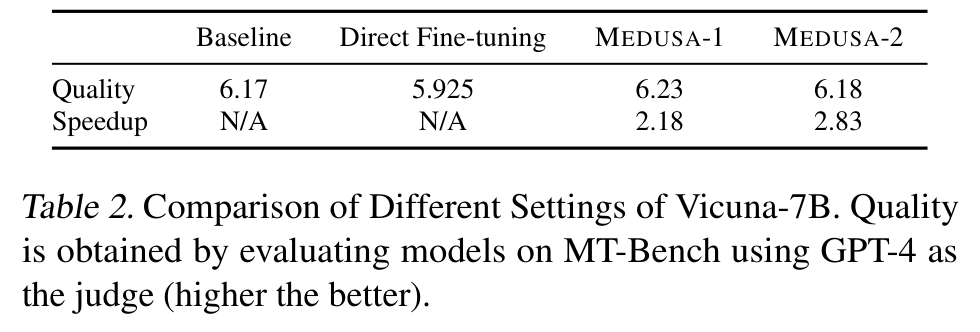
Original caption / source
Table 2 : Comparison of Different Settings of Vicuna-7B. Quality is obtained by evaluating models on MT-Bench using GPT-4 as the judge (higher the better) .
Source paper PDFTable 2 · Full original values / 全表转录
| Baseline | Direct Fine-tuning | Medusa-1 | Medusa-2 | |
|---|---|---|---|---|
| Quality | 6.17 | 5.925 | 6.23 | 6.18 |
| Speedup | N/A | N/A | 2.18 | 2.83 |
Table 2 深读。 Vicuna-7B baseline 6.17，direct fine-tuning 5.925，下降 0.245 分；Medusa-1 6.23，Medusa-2 6.18。Medusa-1 相对 baseline 的 +0.06 不意味着冻结模型能力被训练增强，可能含采样、接受或 judge 波动。表支持所给训练 recipe 比直接联合微调更稳，但未通过相同预算、多 seed 与逐组件对照将所有改善归因给 warmup。
direct fine-tuning 的 speedup 是 N/A，而不是 0 或 1。表中质量接近是经验结论，不能取代概率保证。

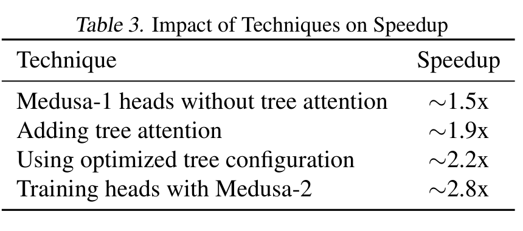
Table 3 · Full original values / 全表转录
| Technique | Speedup |
|---|---|
| Medusa-1 heads without tree attention | 1.5x |
| Adding tree attention | 1.9x |
| Using optimized tree configuration | 2.2x |
| Training heads with Medusa-2 | 2.8x |
Table 3 深读。 无树的 Medusa-1 heads 约 1.5×；加 tree attention 约 1.9×；优化树约 2.2×；换 Medusa-2 训练约 2.8×。这是累计配置收益，不能将四个数相加。逐阶段比例是约 26.7%、15.8%、27.3%，但各阶段不是完整 factorial ablation，也没有单独拆出 typical 与采样模式的贡献。
4. Discussion：适用范围由瓶颈决定
作者总结：没有独立完整 draft 模型的 Medusa 更易集成，通过共享 hidden、树验证和轻量训练提升 LLM 生成效率。工程分析： 它仍需要 tree mask、特殊 position IDs、候选索引、接受规则、KV 重排和下一轮 logits 管理；“结构简单”相对于两套完整模型部署成立，不能理解为无需修改 decoding runtime。
可用前提是 target 验证额外工作的边际成本较低，而且 heads 的接受贡献足够大。高 batch、长上下文、昂贵 attention、很小 target、受限词表投影或慢 CPU/GPU 同步都可能压低收益。训练适配需求也使它不等于“即插即用支持所有模型”。
Impact Statement 讨论更低成本、更可获得的生成能力。论文没有实际能耗或端侧电池测量；减少 wall time 不必然同比减少功耗，不能把成本、能耗和吞吐当作互相等价的实测指标。
Appendix A. Related Work：同一目标有多条优化轴
A.1 LLM Inference：KV、量化、IO 与并行生成
论文讨论 attention IO 优化、KV 减量/压缩、量化和推理引擎，这些分别减少中间矩阵读写、每 token 历史状态、权重字节或调度浪费。Medusa 改变每次读权重后的有效产出，理论上可与这些路线组合，但收益通常不能相乘：一种优化可能让另一个瓶颈突出。
例如 GQA 缩小 KV，使 attention bandwidth 下降；weight-only 量化压缩权重，使 CPU top-k、head 输出投影或候选 gather 的比例上升；FlashAttention 免去显式 score 存储，但仍要满足 tree mask 的语义。PagedAttention 管理 KV page 不等于自动理解一棵非连续候选树。
A.2 Sampling：接受集合与输出分布
论文的 typical acceptance 借鉴概率截断方向，核心是“概率够高则候选可接受”。strict speculative sampling 的目标是完全匹配 fixed target 分布，而本文扩展选择接受较合理的最长路径。两类设计解决的输出契约不同。本文贡献在系统/质量折中上有意义，其合理性应由任务评估支持，而不是错误地用“p=q 也会拒绝”来证明。
Appendix B. Experimental Settings：复现需要哪些具体数值
B.1 Baseline 与速度协议
主要 baseline 使用默认 Hugging Face 路径；标准 speculative baseline 还尝试不同 draft 大小和草稿长度，并使用编译降低 draft overhead，Appendix D 有具体结果。不同模型、sampling、dtype、GPU 和版本对每张主表的对应披露不够完整。附录算子 profiling 的 A100/A40/A6000 不自动证明主实验也分别用了这些配置。
B.2 所有模型的共同训练配置
| 项目 | 原论文报告 |
|---|---|
| 框架 / optimizer | Axolotl；8-bit AdamW |
| LR schedule | cosine + warmup |
| Heads | 5 个，每个 1 层；λ_k=0.8^k |
| 联合训练 | LoRA 或 QLoRA；heads LR 为 backbone 4× |
| LoRA 范围 | backbone 全部 Linear，含 LM head |
| LoRA 参数 | rank=32，α=16，dropout=0.05 |
B.3 Vicuna-7B/13B
原文配置为 global batch 64、backbone peak LR 5e−4、heads 2e−3、warmup 40 steps、4-bit backbone；先 Medusa-1 初始化，再 Medusa-2 QLoRA，Eq.2 的 λ₀=0.2。模型基于 Vicuna v1.5，训练 2 epochs，sequence length 4096。数据与模板边界应对齐其 ShareGPT 配置，避免未来位置标签跨对话边界。
B.4 Vicuna-33B / Zephyr-7B
采用自蒸馏，约 100k 样本、sequence length 2048、global batch 128；backbone LR 1e−4、head LR 4 倍、warmup 20 steps、λ₀=0.01。这里使用逐渐增大的 sine schedule 代替主实验两阶段方案，但文中 θ₀ 的命名没有充分定义。该缺口标为复现需核对，不能自行补全精确 schedule。这里训练策略与 B.3 不同，应按模型列分别记录。
Appendix C. Sparse Tree：预计算拓扑，让运行时只用索引

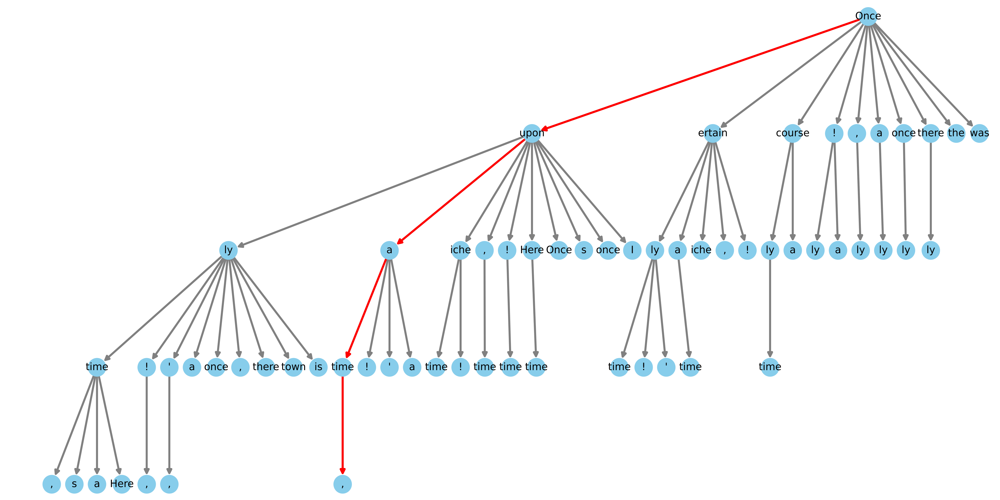
Original caption / source
Figure 6 : Visualization of a sparse tree setting for Medusa -2 Vicuna-7B. The tree has 64 nodes representing candidate tokens and a depth of 4 which indicates 4 Medusa heads involved in calculation. Each node indicates a token from a top-k prediction of a Medusa head, and the edges show the connections between them. The red lines highlight the path that correctly predicts the future tokens.
Source paper PDFFigure 6 深读。 每个节点表示某个 head 的 top-k rank；四层深度对应 4 个活跃未来 heads，64 个候选节点由校准命中率决定。红线标出一条正确未来路径；树在早期高概率分支扩展更多。读图时看“扩展落在哪些父节点”比只数叶子更重要。正文的虚拟根与 runtime LM 根有计数差别，部署时应检查实际 buffer length。
稀疏树使用 rank 路径，而不把具体 token 词汇固化；运行时 top-k 换成真实 token ID。可预先生成 tree_attn_mask、tree_indices、tree_position_ids、retrieve_indices。树节点存储顺序与路径逻辑顺序可以不同，retrieve 索引负责映射。
官方实现 pipeline 中，candidate selection 读取已有 logits，tree decoding 产生所有节点 hidden，再由 posterior evaluation 选 best path，最后 update inference inputs 更新 tokens 和 KV。这条链路是移植时最值得先核验的地方。
Appendix D. Standard Speculative Decoding：draft 大小与 γ 都要调

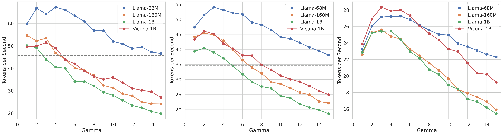
Original caption / source
Figure 7 : Inference speed of various models using speculative decoding on MT-Bench. Baseline model speeds are presented by grey dotted lines for comparison. γ denotes the draft token number.
Source paper PDFFigure 7 深读。 三个原始 panel 完整保留，分别为 Vicuna-7B/13B/33B。横轴 γ 是一次 draft 的 token 数，纵轴是 tokens/s；灰虚线为各自 AR baseline。较长 draft 虽可能减少 target 轮数，却要串行运行小模型更多次，接受也会在首个 mismatch 截断。
论文测试中较优配置包括 7B 对 Llama-68M 的 γ=4、13B 对 Llama-68M 的 γ=3、33B 对 TinyVicuna-1B 的 γ=3。draft 经过 compile，并非只选一个故意弱的 baseline。但这些是特定旧模型组合；相对于默认 target baseline 的优势不能证明 Medusa 永久优于所有独立 drafter。
Appendix E. More Model Results：看模型间差异，也检查 caption

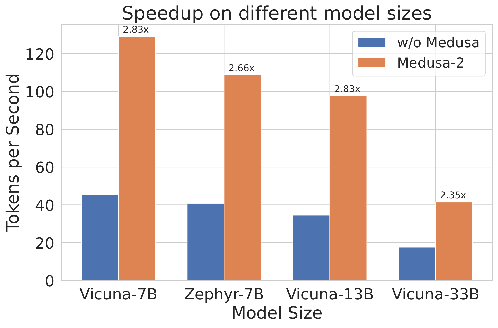
Original caption / source
Figure 8 : Speedup of various models with Medusa -2. Medusa -2 shows significant speed improvement over all the models, while models trained with self-distillation (Zephyr-7B, Vicuna-13/33B) have weaker speedup due to the trade-off between preserving quality and boosting speed.
Source paper PDFFigure 8 深读。 横向比较更多 Medusa-2 模型。不同 target 的 head 可预测性和训练约束带来不同 speedup。必须把柱形与 Table 1 的接受率、overhead 一起读，才能理解为何大模型并非必然获得更高加速比。
原文一致性提醒。 Figure 8 caption 把 Vicuna-13B 也归到 self-distillation，但 §3.1 与 Appendix B.3 将 7B/13B 归为主数据两阶段训练；B.4 列 33B/Zephyr 为自蒸馏。本精读保留原 caption，按正文与配置分组分析，不将矛盾悄悄消掉。
Appendix F. AlpacaEval：速度换算到 TPOT

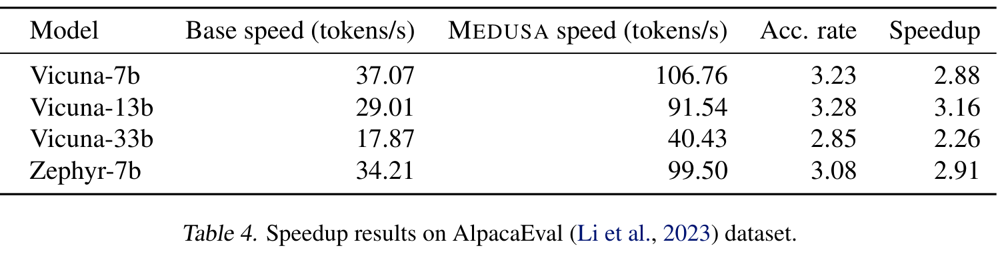
Original caption / source
Table 4 : Speedup results on AlpacaEval ( Li et al., 2023 ) dataset.
Source paper PDFTable 4 · Full original values / 全表转录
| Model | Base speed (tokens/s) | Medusa speed (tokens/s) | Acc. rate | Speedup |
|---|---|---|---|---|
| Vicuna-7b | 37.07 | 106.76 | 3.23 | 2.88 |
| Vicuna-13b | 29.01 | 91.54 | 3.28 | 3.16 |
| Vicuna-33b | 17.87 | 40.43 | 2.85 | 2.26 |
| Zephyr-7b | 34.21 | 99.50 | 3.08 | 2.91 |
Table 4 深读。 baseline→Medusa 的 tokens/s 为 37.07→106.76（7B）、29.01→91.54（13B）、17.87→40.43（33B）、34.21→99.50（Zephyr）。从原值重新算 speedup 是 2.880、3.155、2.262、2.909，表内分别舍入 2.88、3.16、2.26、2.91。
| 模型 | 吞吐绝对增加 token/s | 吞吐相对增加 | baseline TPOT → Medusa TPOT |
|---|---|---|---|
| Vicuna-7B | +69.69 | +188.0% | 26.98 → 9.37 ms/token |
| Vicuna-13B | +62.53 | +215.5% | 34.47 → 10.92 ms/token |
| Vicuna-33B | +22.56 | +126.2% | 55.96 → 24.73 ms/token |
| Zephyr-7B | +65.29 | +190.9% | 29.23 → 10.05 ms/token |
这些 TPOT 是 1000/tokens_per_second 的平均速度换算，不是本次实测逐 token 延迟分布；Medusa 一轮会成块提交，用户可见 token 间隔不是均匀的。Table 4 没有 AlpacaEval win rate 或任务准确率，不能说该表证明质量保持。论文用 AlpacaEval 校准树，又在该数据上报告速度；校准与评估的独立拆分披露不足，应关注分布适配与潜在重复。
Appendix G. Roofline：多算一些，是否能少花时间？
G.1 不同阶段的算子复杂度

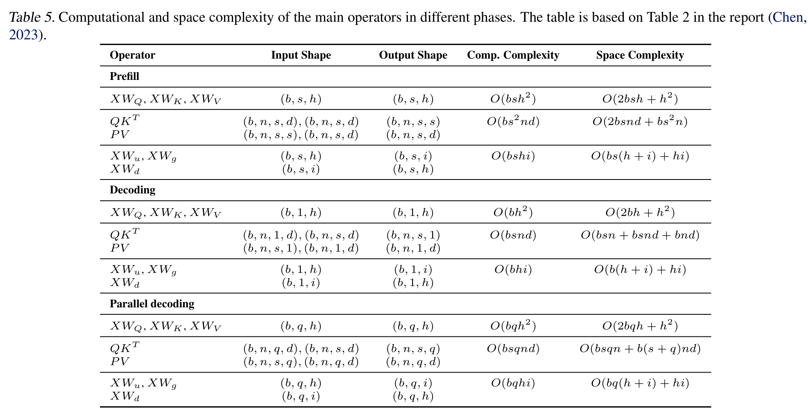
Original caption / source
Table 5 : Computational and space complexity of the main operators in different phases. The table is based on Table 2 in the report ( Chen, 2023 ) .
Source paper PDFTable 5 · Full original values / 全表转录
| Operator | Input Shape | Output Shape | Comp. Complexity | Space Complexity |
|---|---|---|---|---|
| Prefill | ||||
| , , | ||||
| , | ||||
| Decoding | ||||
| , , | ||||
| , | ||||
| Parallel decoding | ||||
| , , | ||||
| , | ||||
Table 5 深读。 原表将 prefill、单 token decode 和 parallel decode 分开。q 从 1 增大，投影和 MLP 的 FLOPs 随 q 增大，而权重加载可在这些位置间复用；attention 对每个新 query 仍要读历史 KV，因此不同算子随 q、B、S 的变化不同。
原表 shape 校正。 parallel decoding 中 QKᵀ 的 output 被写为 [b,n,s,q]，随后 PV 的输入也出现方向不匹配。为避免 q≠s 时照抄出错，保留原表并给出下面一致的工程记号：
| 算子 | 输入 → 输出 | FLOPs 主项 | 主要存储 / IO |
|---|---|---|---|
| QKV 投影（MHA 示意） | [B,q,d] × [d,d] → [B,q,d] | O(Bqd²) | 权重 O(d²)，激活 O(Bqd) |
| QKᵀ | [B,H,q,D_h] × [B,H,D_h,S+q] → [B,H,q,S+q] | O(BHq(S+q)D_h) | KV O(BH(S+q)D_h) |
| PV | [B,H,q,S+q] × [B,H,S+q,D_h] → [B,H,q,D_h] | O(BHq(S+q)D_h) | 若显式写 score，多 O(BHq(S+q)) |
| MLP up/gate/down | [B,q,d] → [B,q,i] → [B,q,d] | O(Bqdi) | 权重 O(di)，中间激活 O(Bqi) |
这里 H 为 MHA head 数；GQA 使用 H_q 与 H_kv 区分。树 mask 的零不能自动省掉 dense QK 的所有相应 FLOPs。Fused attention 可避免完整 score 写回，但需支持正确 mask。复杂度是主项，没有隐含包含 host 调度、sampling 与 KV copy。
G.2 九张 Roofline 原图：按 GPU 和规模逐张读取
横轴 operational intensity（FLOP/byte），纵轴 FLOP/s，均为对数轴。斜线是 bandwidth roof，水平线是 compute roof。点接近哪条线，说明相应测量条件下受到哪种资源约束；离 roof 很远也可能有 kernel、launch、小矩阵利用率等原因，不能一概断言只缺带宽。ar 是 decode，init 是 prefill；qkv 与 up/gate/down 属于线性层，qk/pv 是 attention 两个矩阵乘。
![Figure 9 : The figure shows the relationship between FLOP/s and Operational Intensity for all benchmarked datapoints of Llama-7B operators on A100-80GB-PCIe. The dashed lines represent the HBM bandwidth limit (1,935GB/s) and the peak performance limit (312 TFLOP/s) ( NVIDIA, ) . ‘ qkv mlp ’ stands for the linear layers projecting hidden features to query/key/value features. ‘ up/gate/down ’ stands for the linear layers following the attention block. ‘ qk/pv ’ stands for the two steps of attention matrix multiplications. ‘ ar ’ stands for the decoding (autoregressive) and ‘ init ’ stands for the prefill phase.](assets/figures/fig-09.png)
Original caption / source
Figure 9 : The figure shows the relationship between FLOP/s and Operational Intensity for all benchmarked datapoints of Llama-7B operators on A100-80GB-PCIe. The dashed lines represent the HBM bandwidth limit (1,935GB/s) and the peak performance limit (312 TFLOP/s) ( NVIDIA, ) . ‘ qkv mlp ’ stands for the linear layers projecting hidden features to query/key/value features. ‘ up/gate/down ’ stands for the linear layers following the attention block. ‘ qk/pv ’ stands for the two steps of attention matrix multiplications. ‘ ar ’ stands for the decoding (autoregressive) and ‘ init ’ stands for the prefill phase.
Source paper PDFFigure 9（7B / A100）深读。 对照相同 operator 的 ar/init 点：单 token 投影与 MLP 位于低算术强度区域，prefill 的多位置矩阵提高复用并更接近计算区。原 caption 的 1,935 GB/s 与 312 TFLOP/s 是图中引用的 roof 标签；不应把它们直接当作本地设备或所有 A100 PCIe 的实测规格。

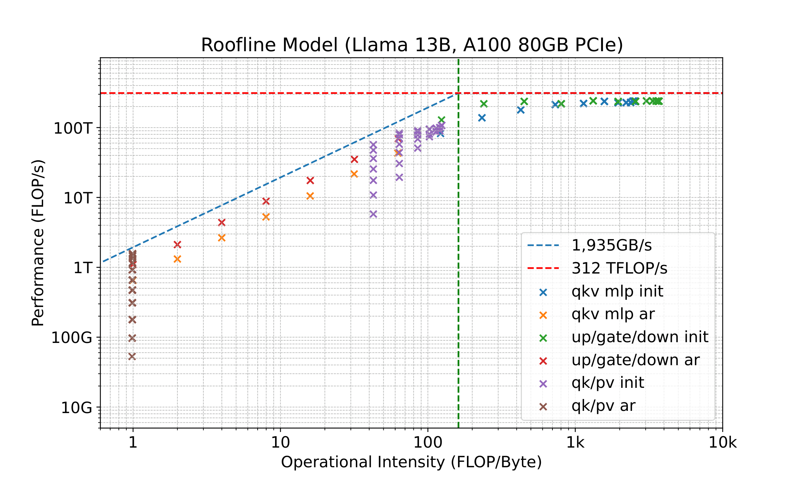
Figure 10（13B / A100）深读。 同一硬件换更大模型，用点云的尺度和位置看“模型参数更多”与“算术强度更高”是否等价。decode 仍有低强度线性层，增加模型规模不能替代把 q 从 1 提高来复用权重；attention 随历史 KV 长度变动，又与投影不同。

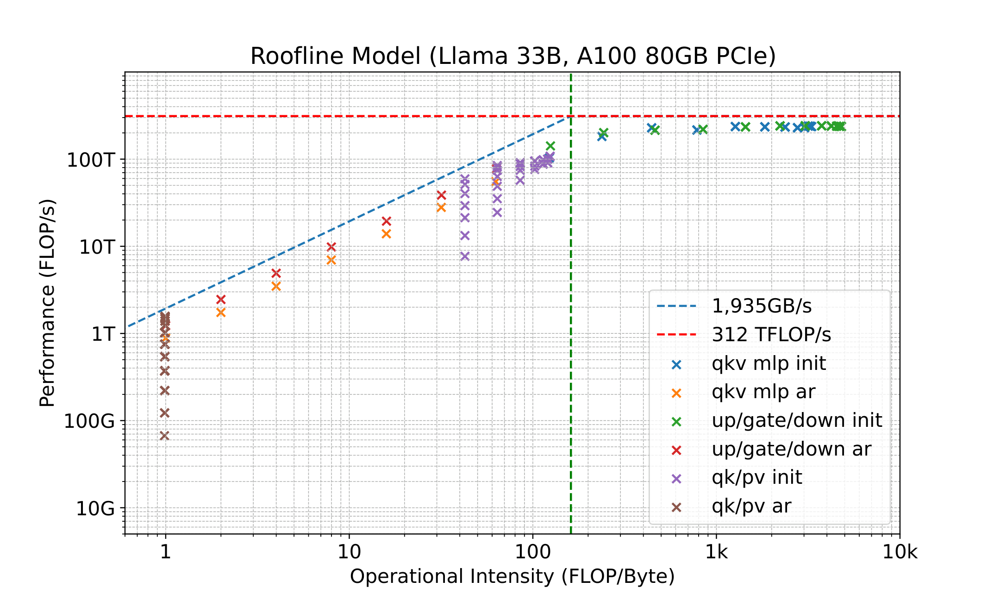
Figure 11（33B / A100）深读。 更大模型的权重字节可使单请求 decode 明显受 memory 影响；prefill 位置较多时，线性层已有高强度。此图支持寻找 decode 余量，不是 Medusa 端到端速度测试。它也提醒：head 附加参数和完整词表投影会加入权重读写。

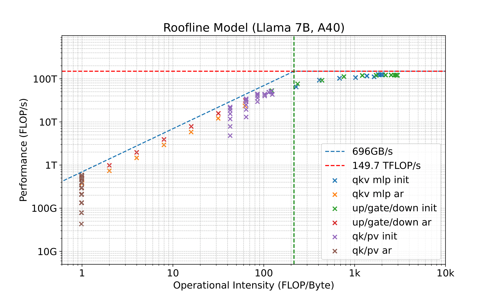
Figure 12（7B / A40）深读。 换 GPU 后 bandwidth/compute roof 的交点改变；同一 intensity 下能达到的绝对 FLOP/s 不同。不能把 A100 的 q=64 预算和 speedup 直接移到 A40。应比较相同 operator 点相对本图 roof 的距离。

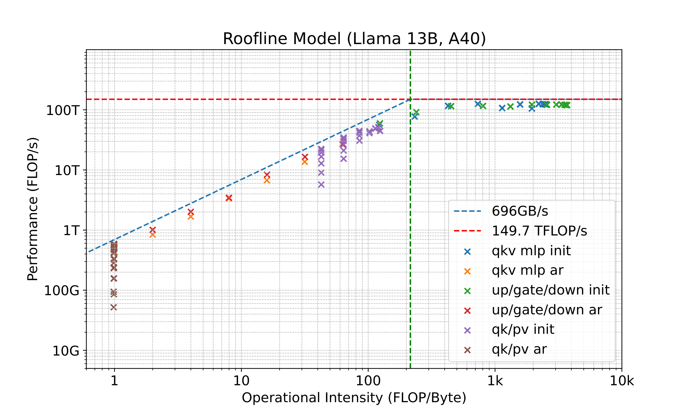
Figure 13（13B / A40）深读。 横向对比 Figure 10 的同规模模型，再纵向对比 Figure 12 的同硬件较小模型，区分硬件效应与模型效应。多候选投影的价值来自更多有效行复用权重，而 qk/pv 的历史 KV 不会因此消失。

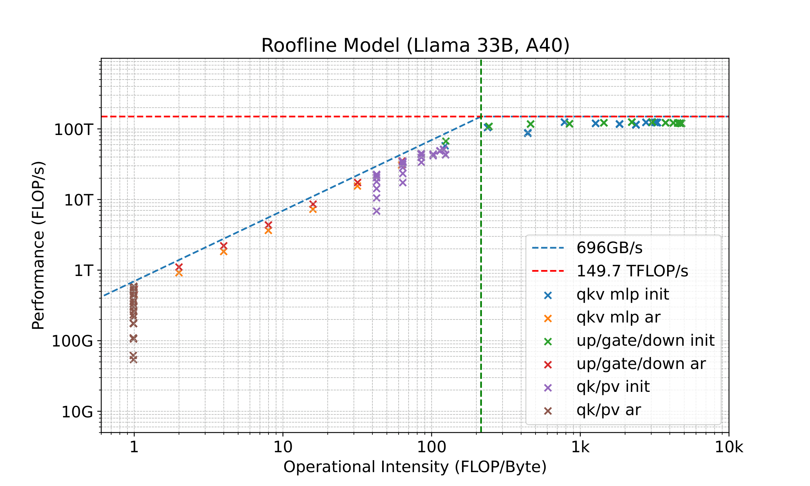
Figure 14（33B / A40）深读。 大模型在较低硬件 roof 下可更早遇到容量/算力/带宽边界。点云只能证明 benchmarked operator 条件；未加入训练 heads、接受器与 KV 重排，也没有生成质量维度，不能将 roofline 图当作全部 inference pipeline 的性能画像。

Figure 15（7B / A6000）深读。 同样观察 ar/init 分离与线性层、attention 的不同族群。A6000 的 roof 与 A40/A100 不同，说明“GPU 闲置算力可利用”需要针对设备核验。一般原理可以迁移，具体最佳树和收益不能直接迁移。

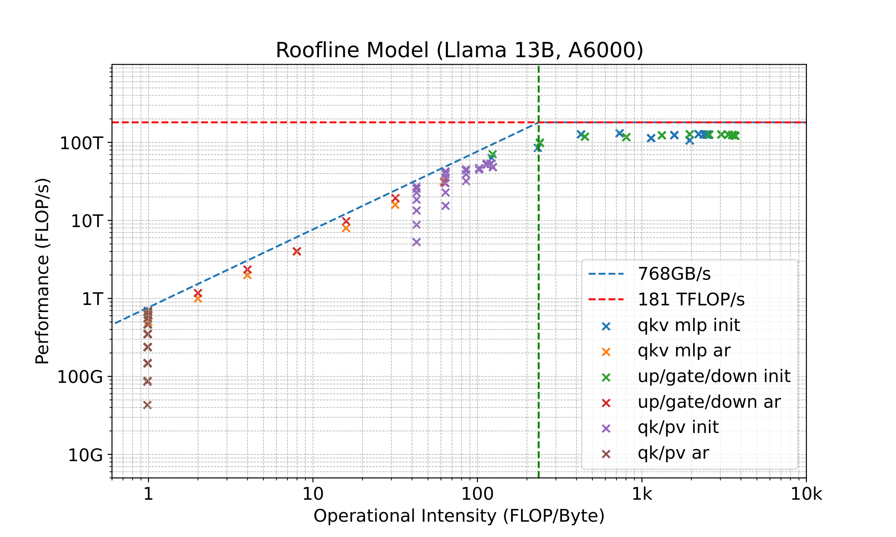
Figure 16（13B / A6000）深读。 对照 Figure 13 同规模/不同设备，避免只按显卡名字排序。低 intensity 点在斜 roof 下，高 intensity 点受水平 roof 限制；有效吞吐还要除去被拒候选的计算，FLOP/s 高并不保证 token/s 高。

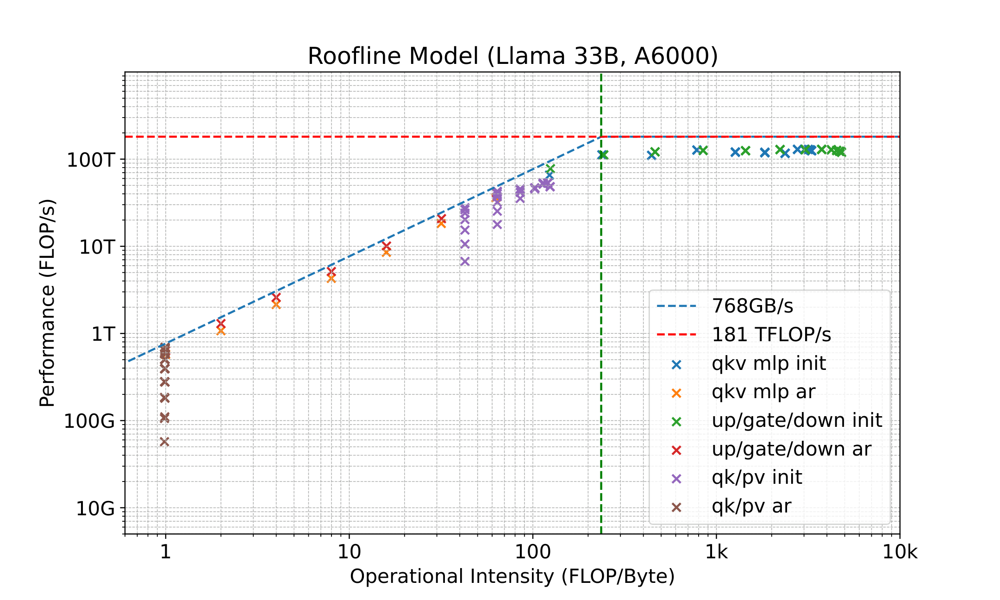
Figure 17（33B / A6000）深读。 九图的共同结论是：单 token decode 与多 token prefill 有不同复用机会，不同算子也有不同瓶颈。共同形态支持 Medusa 的系统动机；它们没有证明每一种 batch、context、dtype 或新硬件都 memory-bound。
G.3 增加 q：矩阵效率提高，工作量也提高

Original caption / source
Figure 18 : FLOP/s vs. Operational Intensity of attention matrix multiplication with batch size 16.
Source paper PDFFigure 18 深读。 Llama-33B、A100、B=16，改变 history sequence length 和候选数。q 增大让 attention 的 FLOP/s 与 intensity 上升，但增加了查询行数；S 越长，KV 工作越重。用 Table 6 的原始数值可以更精确拆解。

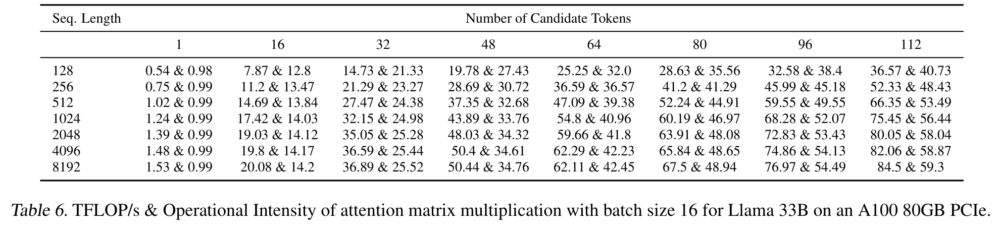
Original caption / source
Table 6 : TFLOP/s & Operational Intensity of attention matrix multiplication with batch size 16 for Llama 33B on an A100 80GB PCIe.
Source paper PDFTable 6 · Full original values / 全表转录
| Seq. Length | Number of Candidate Tokens | |||||||
|---|---|---|---|---|---|---|---|---|
| 1 | 16 | 32 | 48 | 64 | 80 | 96 | 112 | |
| 128 | 0.54 & 0.98 | 7.87 & 12.8 | 14.73 & 21.33 | 19.78 & 27.43 | 25.25 & 32.0 | 28.63 & 35.56 | 32.58 & 38.4 | 36.57 & 40.73 |
| 256 | 0.75 & 0.99 | 11.2 & 13.47 | 21.29 & 23.27 | 28.69 & 30.72 | 36.59 & 36.57 | 41.2 & 41.29 | 45.99 & 45.18 | 52.33 & 48.43 |
| 512 | 1.02 & 0.99 | 14.69 & 13.84 | 27.47 & 24.38 | 37.35 & 32.68 | 47.09 & 39.38 | 52.24 & 44.91 | 59.55 & 49.55 | 66.35 & 53.49 |
| 1024 | 1.24 & 0.99 | 17.42 & 14.03 | 32.15 & 24.98 | 43.89 & 33.76 | 54.8 & 40.96 | 60.19 & 46.97 | 68.28 & 52.07 | 75.45 & 56.44 |
| 2048 | 1.39 & 0.99 | 19.03 & 14.12 | 35.05 & 25.28 | 48.03 & 34.32 | 59.66 & 41.8 | 63.91 & 48.08 | 72.83 & 53.43 | 80.05 & 58.04 |
| 4096 | 1.48 & 0.99 | 19.8 & 14.17 | 36.59 & 25.44 | 50.4 & 34.61 | 62.29 & 42.23 | 65.84 & 48.65 | 74.86 & 54.13 | 82.06 & 58.87 |
| 8192 | 1.53 & 0.99 | 20.08 & 14.2 | 36.89 & 25.52 | 50.44 & 34.76 | 62.11 & 42.45 | 67.5 & 48.94 | 76.97 & 54.49 | 84.5 & 59.3 |
Table 6 深读。 每格为 TFLOP/s & FLOP/byte，不是 latency。B 固定 16，S 有 128–8192 七行，q 有 1、16、32、48、64、80、96、112 八列。S=1024、q=1 为 1.24 & 0.99，q=64 为 54.8 & 40.96，即计算吞吐 44.19×、强度 41.37×。
若按固定 S 的同类 attention 矩阵工作量近似 q 倍，单次算子时间比例是 64 / 44.19 ≈ 1.45，即一次 64 行验证仍比一次 1 行慢约 45%；它只是远低于逐行做 64 次的时间。这解释了为何不能写“latency 降低 44×”。最终 token/s 还取决于接受几行及其他算子时间。

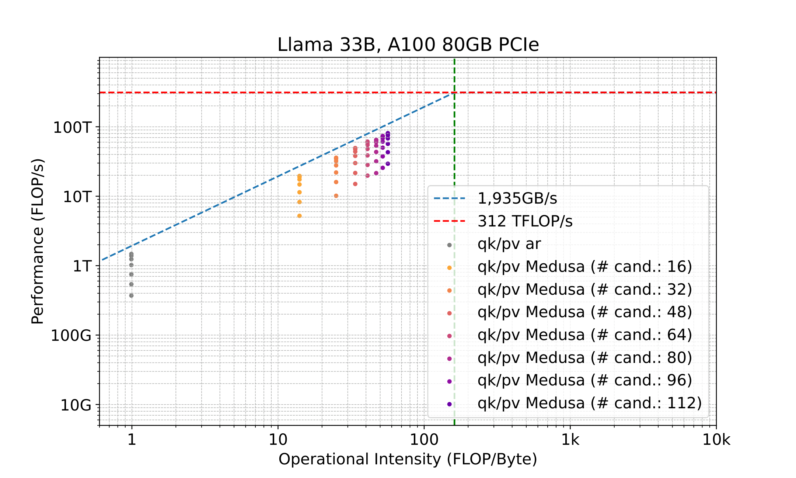
Original caption / source
Figure 19 : FLOP/s vs. Operational Intensity of attention matrix multiplication with sequence length 1024.
Source paper PDFFigure 19 深读。 固定 S=1024，改变 batch 和 q。attention 的单 token operational intensity 不因 B 成比例提高：不同请求的 KV 不能共享成同一历史。B 和 q 都可能提升执行效率，但只有同一路径的候选能共享该请求的 KV 读入；仍受缓存、工作空间与 kernel 结构制约。

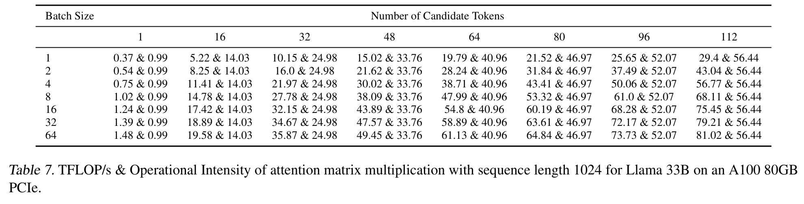
Original caption / source
Table 7 : TFLOP/s & Operational Intensity of attention matrix multiplication with sequence length 1024 for Llama 33B on an A100 80GB PCIe.
Source paper PDFTable 7 · Full original values / 全表转录
| Batch Size | Number of Candidate Tokens | |||||||
|---|---|---|---|---|---|---|---|---|
| 1 | 16 | 32 | 48 | 64 | 80 | 96 | 112 | |
| 1 | 0.37 & 0.99 | 5.22 & 14.03 | 10.15 & 24.98 | 15.02 & 33.76 | 19.79 & 40.96 | 21.52 & 46.97 | 25.65 & 52.07 | 29.4 & 56.44 |
| 2 | 0.54 & 0.99 | 8.25 & 14.03 | 16.0 & 24.98 | 21.62 & 33.76 | 28.24 & 40.96 | 31.84 & 46.97 | 37.49 & 52.07 | 43.04 & 56.44 |
| 4 | 0.75 & 0.99 | 11.41 & 14.03 | 21.97 & 24.98 | 30.02 & 33.76 | 38.71 & 40.96 | 43.41 & 46.97 | 50.06 & 52.07 | 56.77 & 56.44 |
| 8 | 1.02 & 0.99 | 14.78 & 14.03 | 27.78 & 24.98 | 38.09 & 33.76 | 47.99 & 40.96 | 53.32 & 46.97 | 61.0 & 52.07 | 68.11 & 56.44 |
| 16 | 1.24 & 0.99 | 17.42 & 14.03 | 32.15 & 24.98 | 43.89 & 33.76 | 54.8 & 40.96 | 60.19 & 46.97 | 68.28 & 52.07 | 75.45 & 56.44 |
| 32 | 1.39 & 0.99 | 18.89 & 14.03 | 34.67 & 24.98 | 47.57 & 33.76 | 58.89 & 40.96 | 63.61 & 46.97 | 72.17 & 52.07 | 79.21 & 56.44 |
| 64 | 1.48 & 0.99 | 19.58 & 14.03 | 35.87 & 24.98 | 49.45 & 33.76 | 61.13 & 40.96 | 64.84 & 46.97 | 73.73 & 52.07 | 81.02 & 56.44 |
Table 7 深读。 q=1 时 B 从 1 到 64，attention TFLOP/s 从 0.37 到 1.48，而 intensity 保持 0.99；这是“更多 batch 提高利用率，却不自动增加单请求 KV 复用”的直接数值证据。q=64 时同样从 19.79 到 61.13 TFLOP/s；并不是 q 和 B 带来的收益能够无限相乘。

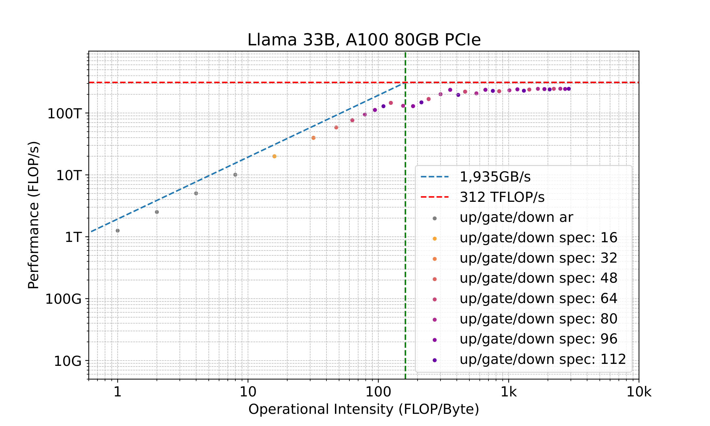
Original caption / source
Figure 20 : FLOP/s vs. Operational Intensity of Linear layers.
Source paper PDFFigure 20 深读。 linear up/gate/down 的点随有效行数 Bq 提高，权重矩阵的重复读取可被摊薄；进入 compute roof 后继续加行数主要增加时间。这是 Medusa 在小 batch 有利、在较大 batch 收益趋弱的系统依据。

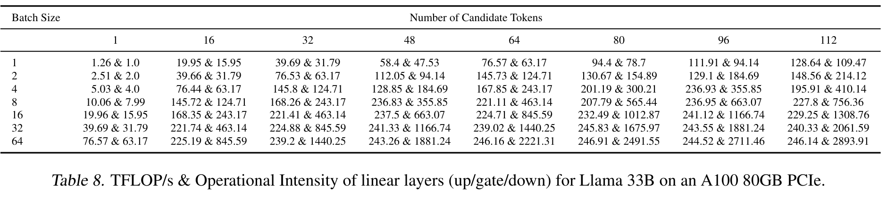
Original caption / source
Table 8 : TFLOP/s & Operational Intensity of linear layers (up/gate/down) for Llama 33B on an A100 80GB PCIe.
Source paper PDFTable 8 · Full original values / 全表转录
| Batch Size | Number of Candidate Tokens | |||||||
|---|---|---|---|---|---|---|---|---|
| 1 | 16 | 32 | 48 | 64 | 80 | 96 | 112 | |
| 1 | 1.26 & 1.0 | 19.95 & 15.95 | 39.69 & 31.79 | 58.4 & 47.53 | 76.57 & 63.17 | 94.4 & 78.7 | 111.91 & 94.14 | 128.64 & 109.47 |
| 2 | 2.51 & 2.0 | 39.66 & 31.79 | 76.53 & 63.17 | 112.05 & 94.14 | 145.73 & 124.71 | 130.67 & 154.89 | 129.1 & 184.69 | 148.56 & 214.12 |
| 4 | 5.03 & 4.0 | 76.44 & 63.17 | 145.8 & 124.71 | 128.85 & 184.69 | 167.85 & 243.17 | 201.19 & 300.21 | 236.93 & 355.85 | 195.91 & 410.14 |
| 8 | 10.06 & 7.99 | 145.72 & 124.71 | 168.26 & 243.17 | 236.83 & 355.85 | 221.11 & 463.14 | 207.79 & 565.44 | 236.95 & 663.07 | 227.8 & 756.36 |
| 16 | 19.96 & 15.95 | 168.35 & 243.17 | 221.41 & 463.14 | 237.5 & 663.07 | 224.71 & 845.59 | 232.49 & 1012.87 | 241.12 & 1166.74 | 229.25 & 1308.76 |
| 32 | 39.69 & 31.79 | 221.74 & 463.14 | 224.88 & 845.59 | 241.33 & 1166.74 | 239.02 & 1440.25 | 245.83 & 1675.97 | 243.55 & 1881.24 | 240.33 & 2061.59 |
| 64 | 76.57 & 63.17 | 225.19 & 845.59 | 239.2 & 1440.25 | 243.26 & 1881.24 | 246.16 & 2221.31 | 246.91 & 2491.55 | 244.52 & 2711.46 | 246.14 & 2893.91 |
Table 8 深读。 MLP 在 B=1、q=1 为 1.26 & 1.0；B=1、q=64 为 76.57 & 63.17；B=64、q=64 为 246.16 & 2221.31。线性层 intensity 随 Bq 大幅上升，但 TFLOP/s 后段接近平台，不能继续按低 batch 的倍率外推。所有 56 格完整保留，没有只选择最佳格。
查询原始 per-op 数据，拆开 FLOP/s 与时间
选择原表、固定行和 q。读数直接来自原论文；只在原表离散测量点间选择，不做插值。
More compute throughput does not mean a faster iteration; useful throughput also depends on accepted tokens.
固定同一行，按矩阵主工作量约 ∝q，推导 time(q)/time(1)≈q/(FLOP/s ratio)。这是所测算子的主项比例；不是完整模型 latency，也不包含 heads、sampling、KV copy 或同步。
该交互读取 Tables 6–8 全部 168 个原始数值对；只做格值查询与比例推导，没有插值，也没有伪造新硬件 benchmark。固定同一行时按矩阵主项推导 time ratio，并提示它不是全模型 latency。
G.3 模拟端到端趋势：有解释力，不能当真实服务

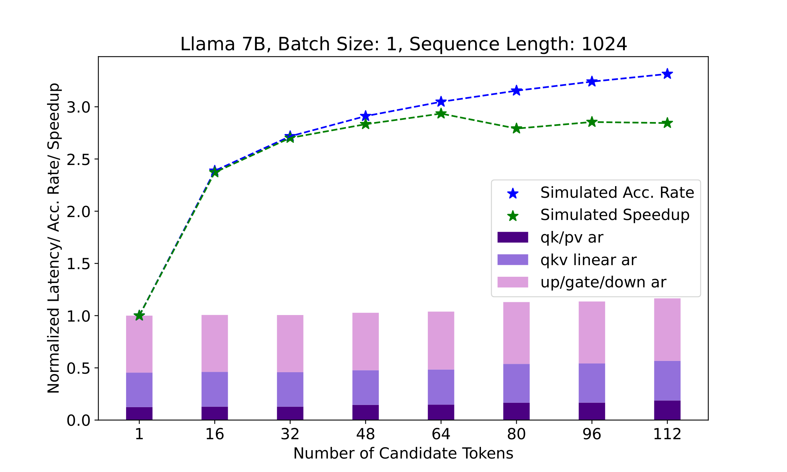
Original caption / source
Figure 21 : Simulated acceleration rate, speedup, and normalized latency ablation using different numbers of candidate tokens under the setting of batch size 1 and sequence length 1024 for Llama-7B on an A100 80GB PCIe.
Source paper PDFFigure 21 深读。 Llama-7B、A100、B=1、S=1024 的一层 block 简化模拟。横轴候选数，曲线分别是模拟 acc. rate、speedup 和归一化 latency；约 64 附近出现较好折中。acc. rate 增长但每轮成本也增长，最优点在两者比值，不在最大候选数。
模拟使用约 0.477·log(q) 的经验接受量近似，其在 q=1 给出 0，而真实普通 decode 至少生成根 token；这是拟合/定义范围问题，不能机械外推到边界。模型没有完整刻画 heads、词表输出、KV gather/copy、接受器、host 同步、通信和服务调度。

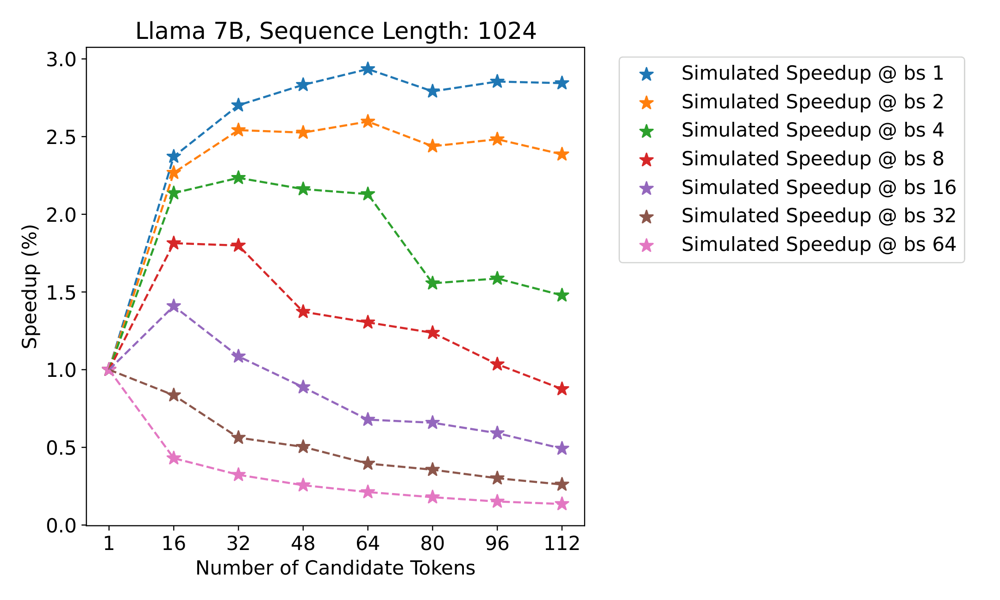
Original caption / source
Figure 22 : Simulated speedup with sequence length 1024 for Llama-7B.
Source paper PDFFigure 22 深读。 固定 S=1024，模拟不同 B。batch 更大时投影/MLP 原本就更能复用权重，额外候选的“空闲算力窗口”变小；图示 B>32 时可能失去收益。这个阈值属于给定简化模型，不能当成线上 continuous batching 的普适禁用规则。

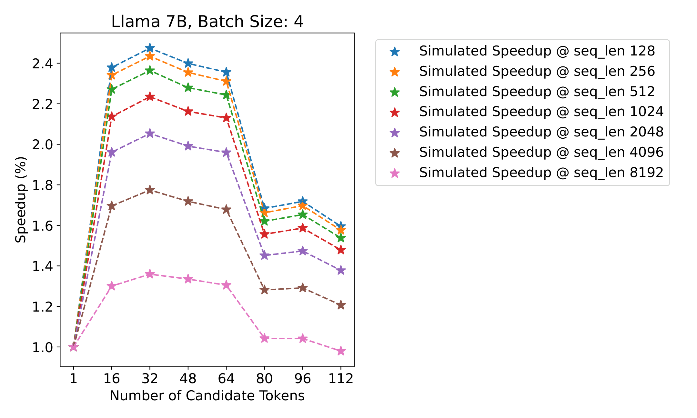
Original caption / source
Figure 23 : Simulated speedup with batch size 4 for Llama-7B.
Source paper PDFFigure 23 深读。 固定 B=4，比较不同 S。更长上下文增加 attention 与 KV 成本，多候选要多次读大量历史，收益下降。真实服务还会受到 prefix sharing、KV precision、paging、长短请求混合和调度影响，因此应把它当趋势假设，设计进一步测量。
Experiment Audit：支持了什么，还缺什么
| 审计项 | 已有证据 | 结论边界 / 建议补测 |
|---|---|---|
| 速度 | MT-Bench、AlpacaEval wall-time/tokens/s；多个旧模型 | 相对默认实现，未给今日强优化引擎统一对比 |
| 质量 | GPT-4 judge，主模型相对均分接近 | 没有统计区间；13B −0.14 分不能隐去；不等价于分布相同 |
| 训练 | M1/M2、两阶段与 self-distill recipe | warmup 文字/符号不一致；详细训练 token/成本未完全齐全 |
| 树 | dense/sparse 对比；校准 rank accuracy | 独立近似；校准域与线上分布变化；校准/评估拆分不足 |
| 采样 | T=0.7 的写作/角色扮演曲线 | 多温度、多任务、长回答、可靠性与分布偏差待补 |
| 算子 | 三种 GPU roofline、Tables 6–8 | 是 per-op 数据；不含完整 speculative pipeline |
| 服务 | 小 batch 动机与简化 batch 模拟 | continuous batching、p99、SLA、吞吐/延迟折中未充分验证 |
| 端侧 | 无 NPU/HTP 性能与功耗实测 | 不能从 GPU GEMM 利用率外推端侧动态树收益 |
最值得补的公平对照。 固定同一 target checkpoint、dtype、prompt/输出长度、temperature、GPU 和引擎版本；分别跑 AR、严格验证 M1、typical M1、严格验证 M2、typical M2。报告每轮候选 q、接受 ℓ 分布、per-op 时间、KV peak、TTFT、平均/尾部 TPOT、整体 tokens/s 和任务质量。这样才能把“模型改变”“规则改变”“runtime 改善”三个来源拆开。
质量至少分任务测：coding 的 pass@1、math 的 exact match、writing/roleplay 的偏好或 judge 分布；必要时统计失败类型。对确定分类任务才使用 TP/FP/TN/FN 及 Precision/Recall/F1，避免用不适配指标遮蔽真实质量变化。
Related Work & Technology Evolution：2018—2026
下表的速度均为各来源自报上限或范围，不形成跨条件排名。年份取最早公开时间；正文保持 Medusa 2024 年历史语境，后续工作另列。
| 路线 / 来源 | 时间 | 核心变化 | 优点 | 限制 / 与 Medusa 的关系 |
|---|---|---|---|---|
| Blockwise Parallel Decoding [2] | 2018-11 | 多未来头 + scoring model 最长前缀 | 奠定并行预测再回退思想 | MT/图像设置；Medusa 明确继承这一骨架 |
| Exact Speculative Sampling [3] | 2022-11 / ICML 2023 | 独立 drafter + rejection/residual | 保持固定 target 采样分布 | 两模型和 draft 串行成本；接受保证需正确实现 |
| Medusa [1] | 2024-01 | 独立未来 heads、固定树、M1/M2 | 复用 target hidden，结构浅 | 缺少草稿依赖；typical 不无损；需训练 |
| EAGLE [4] | 2024-01 | feature-level 自回归并引入移位 token 条件 | 建模 token 依赖；论文报告 2.7–3.5× | draft 仍有多步依赖；不能直接对比旧 Medusa baseline |
| Hydra [5] | 2024-02 | sequentially dependent heads | 针对 Medusa 头间独立性；报告最高 1.31× Medusa | 增加依赖计算；结果属其测试条件 |
| ReDrafter [6] | 2024-03 | recurrent draft head、beam tree、前缀去重 | 少量共享参数；GPU/Apple MLX 两类实现 | 报告最高 2.8× H100、2.3× Apple，硬件条件不同 |
| EAGLE-2 [7] | 2024-06 | context-dependent 动态树 | 根据在线置信度分配预算；报告 3.05–4.26× | 构树与调度成本；相比静态树更动态 |
| EAGLE-3 [8] | 2025-03 | 多层特征融合，训练模拟 test-time draft | 去掉 feature regression 约束；报告最高 6.5× | 训练/系统配置决定效果；最高值不是通用比例 |
| DFlash [9] | 2026-02 | 条件于 target 特征的轻量 block diffusion drafter | 单次并行提出 token block；严格验证 | 需专用 drafter；报告 >6× 和最高 2.5× EAGLE-3 属自身条件 |
| DFlash / SpecV2 系统更新 [10] | 2026-06 | KV feature 注入、异步准备与 host 清理 | 将接受器/prepare/sync 纳入优化 | kernel、concurrency、训练与硬件决定可比性 |

这张 Agent-created / Simplified Mermaid diagram 表示技术关系，不表示单一路线取代所有其他路线。未来 token 依赖、在线预算分配、并行草稿生成和异步 runtime 是不同轴，可以有组合；箭头不是跨论文性能胜负。
Current State / SOTA：截至 2026-10-27 的条件化判断
本节重新检索并核验原始论文与官方引擎资料。当前公开路线已超出 Medusa 的独立 heads：feature-conditioned draft、动态树、native MTP、并行 block drafter 与 speculative runtime overlap 都在演进。没有统一 target、硬件、质量、采样和负载的公共结果，就不宣布一个全局 SOTA。
较强的同条件证据 [10]。 2026-06-15 的 ZLab / Modal / SGLang 联合官方文章，给出相同 Qwen3-4B target、相同训练数据、5 层 drafter 的 EAGLE-3 与 DFlash 对照：
| Benchmark | EAGLE-3 acc. length / speedup | DFlash acc. length / speedup |
|---|---|---|
| GSM8K | 4.2 / 2.1× | 4.2 / 3.3× |
| HumanEval | 4.3 / 2.2× | 4.0 / 3.2× |
| MT-Bench | 3.1 / 1.4× | 3.0 / 2.2× |
接受长度相近却速度更高，说明串行 drafter 与 runtime 开销是关键；不能只看 accepted tokens 排名。相对于 EAGLE-3 的比值分别约 1.57、1.45、1.57。该结果比跨论文“最高 6.5× 与最高 6×”互比更有意义；文章正文未把此表所有独立硬件条件单列到每一格，因此仍应按该文章完整配置理解。
大模型实例。 同文 Qwen3.5-397B-A17B BF16，8×B200，HumanEval greedy、thinking、最大输出 4096、200 cases、concurrency=1，DFlash block 16 对 AR 报告 >4.3×，对 7-step MTP 约 1.5×。这些条件与 Medusa 的 Vicuna/默认引擎结果完全不同，不列为直接胜负。
服务工程。 SpecV2 清理 host stop-token 等逻辑，并将 prepare/allocation 与 GPU 工作重叠；Qwen3-8B、单 B200、concurrency=32 的报告从约 11.4k 到 15.3k token/s（约 +33%）。这正说明优化应沿调用链测量：draft/verify 之外，CPU 准备和同步也能决定结果。其 feature→KV 注入和 radix prefix sharing 是新 runtime 设计，不能当成原 Medusa 的机制。
实际采用。 Hugging Face TGI 文档仍明确支持 Medusa heads 和 n-gram speculation [11]；SGLang 官方更新讨论 EAGLE/DFlash/SpecV2 [10]；vLLM 2026-08-23 的 AMD GPU 官方文章讨论 MI300X/MI355X 上 native MTP、EAGLE-3、DFlash 等路线和 workload 差异 [12]。这些是实现采用证据，不是相同 benchmark 的质量/性能排名。没有读取到的 NVIDIA 旧文档返回 404，未用它作为支持证据。
Implementation Notes：先把调用链和缓冲状态迁对
一个可核验的 greedy 推理循环
以下是 解释性伪代码，省略 tokenizer、EOS 和严格采样细节；不是官方函数逐字复制。输入 prefix/cache 与 LM/Medusa logits，输出合法 token 序列。posterior 必须来自各节点实际祖先条件；被拒节点不可进入最终 cache。
while not finished:
root = argmax(lm_logits_at_last_committed)
ranked = [topk(x, budget[k]) for k, x in enumerate(head_logits)]
tree_tokens = instantiate_prefix_closed_tree(root, ranked, topology)
old_len = cache.logical_length
outputs = target(
tree_tokens, cache=cache,
attention_mask=prefix_plus_ancestor_mask,
position_ids=old_len + tree_depths,
)
paths = retrieve_paths(outputs, retrieve_indices)
best, extra_accepted = verify_greedy_prefix(paths)
accepted = retrieve_indices[best, :extra_accepted + 1]
prefix.extend(tree_tokens[accepted])
cache.gather_and_compact(old_len + accepted, destination=old_len)
cache.logical_length = old_len + len(accepted)
lm_logits_at_last_committed = outputs.lm_logits[accepted[-1]]
head_logits = outputs.medusa_logits[:, accepted[-1]]
verify 中根无条件来自 LM，后续从第一处不匹配截断；根接受数不能重复加两次。复制 cache 需要处理 src/dst 重叠，通常先 gather 临时张量，再写回；更新每层长度必须一致。EOS/stop token 若出现在接受块中，最终输出与 cache 应只保留到停止位置，而不是先提交整块再仅截文本。
每轮耗时预算
Copy LaTeX
T_{\mathrm{cycle}}=T_{\mathrm{heads}}+T_{\mathrm{build}}+T_{\mathrm{verify}}+T_{\mathrm{accept}}+T_{\mathrm{commit}}+T_{\mathrm{sync}}T_heads 包括多头残差和词表投影；T_build 包括 top-k、索引与 token gather；T_verify 是主模型 q 行工作；T_accept 包括概率、阈值/前缀计算；T_commit 包括 KV gather/copy、长度更新；T_sync 包括 .item()、CPU 分支、跨设备/分布式同步和 launch gaps。实测应记录接受长度分布与每项耗时，再计算有效 token/s。
把所有损耗归给 CUDA 版本、编译或替换模型会掩盖逻辑问题。先检查是否在 token-by-token CPU 循环反复同步、是否 materialize 所有 [K,B,q,V] logits、是否构造不必要 dense mask、是否复制整个历史 cache、是否在结束 token 上误提交，随后才考虑 kernel 和部署选型。
TTFT、TPOT 与端侧内存
Medusa 主要减少 decode 轮数；prefill 和首个 token 路径未自然变快。应分别报告 TTFT、decode TPOT、端到端时长和成块提交的用户可见间隔，不能用 decode speedup 等比例折算 TTFT。prefill/decode 分离时，首 token 应保持统一 LM 路径及 logits 数值，避免验证策略与首 token 精度变化混在一起。
对 NPU/HTP：先核验 tree mask、按 depth 的 RoPE、动态 gather、q shape 与 KV logical length 能否在编译图内运行。固定稀疏树可能比动态树容易编译，但放大 q 也可能增加 RPC、回 CPU 的 sampling、dma-buf workspace 或中间输出。测 dmabuf_dump 的 HTP/ION 峰值并结合 VmHWM 的 CPU 峰值，分别归因权重、KV、candidate logits 与临时拷贝；不能只报模型文件大小。
采用常驻 Native C++ runner、薄 JNI、复用原始缓冲时，关键是每轮都沿同一状态提交路径，按 token/cycle 记录 accept length 和毫秒级计时。量化版头准确率下降应优先检查 hidden/LM/head 量化与转换输出的精度，再检查 calibration 分布；未来边缘预测会放大某些敏感层误差，不能默认归咎于模型尺寸。
Critique：长处、代价与尚未回答的问题
Novelty。 多头并行预测并非 Medusa 首创，2018 blockwise 已有；贡献在适配 LLM 的训练 recipe、树验证、稀疏拓扑和开放实现整合。将它放到正确历史脉络更能看清工程价值。
Correctness。 tree mask/positions/commit 构成可正确实现的验证流程；typical 是经验放宽规则，不能主张 distribution equality。原文 rejection 的极端例子、Table 5 shape、Figure 8 caption 与部分训练符号需要澄清。保留这些错误信息及纠正说明比改写原图更可靠。
Experiment quality。 多模型、多类别、dense/sparse、threshold 和 warmup 有覆盖；缺统一严格/放宽接受拆分、置信区间、端到端强 baseline、动态服务和能耗。主结果相对原文 baseline 有说服力，普遍质量无损与任意场景加速没有被证明。
Scalability / Memory。 不加载第二套完整 backbone 是优点；K(d²+dV) heads、q 候选 KV、全词表 logits 和 gather workspace 都会占内存。大词表、多头、长 S、大 B 可能改变瓶颈；分布式输出 head 的 vocab parallel 还会引入通信。
Generalization / Hardware。 固定树校准方便、可预计算，但领域迁移可能降低 rank 命中；长 context、高并发和端侧小算力不一定有同样余量。附录 roofline 提供趋势依据，不能代替真实服务测量。
Reproducibility。 有官方源码与模型 recipe，复现起点清楚；仍需固定 commit、模型/模板版本、精度、树实际节点数、采样 flag 和 timer 范围。源码中数值分支与论文描述不同处，应如实区分源码观察和运行验证。
Related Readings
- FlashAttention：算得更多，为什么反而更快？ —— attention IO 与 kernel 路径。
- GQA：让 Query 保留多样性，让 KV 共享历史 —— candidate KV 的实际 head 数。
- MQA：多个读头，共用一份历史 —— 小 batch 下权重和 KV 的不同带宽账。
- RoFormer：旋转绝对位置，为什么内积只看相对距离？ —— tree depth 对 position IDs 的要求。
- AWQ：把重要通道的精度，变成端侧真正能用的速度 —— 量化与端侧瓶颈迁移。
References & Source Record
原论文与资产。 [1] Cai et al., ICML 2024，v3 PDF、PMLR、完整图表来源清单、源文本。PDF SHA-256：93d98f2e858c87ee04be440ee81ab8ad93700652ed759227d25fcf75cfdd5ef0。23 Figures 与 8 Tables 均逐号保留。原图由作者源 PDF/PNG 高分辨率渲染，原表由对应原 PDF 页面完整裁取；多 panel 按原顺序组合，未删 legend、坐标轴、脚注。
相关论文。
- [2] Stern, Shazeer & Uszkoreit. Blockwise Parallel Decoding for Deep Autoregressive Models. NeurIPS 2018. arXiv:1811.03115。
- [3] Leviathan, Kalman & Matias. Fast Inference from Transformers via Speculative Decoding. ICML 2023. arXiv:2211.17192v2，尤其 Algorithm / §2.3 与 Theorem 3.5。
- [4] Li et al. EAGLE: Speculative Sampling Requires Rethinking Feature Uncertainty. arXiv:2401.15077。
- [5] Ankner et al. Hydra: Sequentially-Dependent Draft Heads for Medusa Decoding. arXiv:2402.05109；code。
- [6] Cheng et al. Recurrent Drafter for Fast Speculative Decoding in Large Language Models. arXiv:2403.09919。
- [7] Li et al. EAGLE-2: Faster Inference of Language Models with Dynamic Draft Trees. arXiv:2406.16858。
- [8] Li et al. EAGLE-3: Scaling up Inference Acceleration of Large Language Models via Training-Time Test. arXiv:2503.01840。
- [9] DFlash: Block Diffusion for Flash Speculative Decoding. ICML 2026. arXiv:2602.06036v2。
官方代码、项目与引擎资料。
- Medusa official code，本次检查 commit
e2a5d20c048a9b0a4092e6933c34313687422518。重点文件：medusa/model/medusa_model.py、utils.py、kv_cache.py。作者 project/blog 为早期介绍，与最终 v3 的 M2/recipe 范围需区分。 - [10] ZLab / Modal / SGLang. Next-Generation Speculative Decoding: DFlash and Speculative Decoding V2. 2026-06-15. 官方文章。
- [11] Hugging Face TGI. Speculation. 官方文档，访问 2026-10-27。
- [12] vLLM. Speculative Decoding on AMD GPUs. 2026-08-23. 官方文章。
外部资料核验截止 2026-10-27。上述来源用于机制、历史和当下公开结果的解释；除 Tables 6–8 的代数查询以及页面交互外，没有将外部 benchmark 冒充本地实验。来源与核验记录 提供版本、用途与可比性说明。
My Takeaways：最值得迁移的是每轮有效工作量
以下为独立分析 / Interpretation。 Medusa 最有价值的系统观点是：优化单 token 内核之外，还可以增加同一轮权重读取的有效产出。更高 FLOP/s 只有通过接受 token 和真实迭代时间才转换为用户收益；Tables 6–8、Figure 4 和后续同条件 drafter 结果共同说明，accepted length 不是唯一优化目标。
第一个值得做的方向是 把树预算与当前资源状态联合控制：按 B、S、当前延迟预算与在线置信度选 q，而不是沿用固定 64。测试时保持输出契约一致，报告每项 per-op 成本；如果 host 同步占主要部分，增加预测头准确率也未必解决速度瓶颈。
第二个方向是 减少与最终路径无关的大词表投影和临时状态：复用隐藏状态、仅算需要的 head、延迟投影到可确定的节点，并核验这样做是否能保持下一轮草稿可用。它应与 KV 压实、EOS 处理和异步 prepare 协同设计，而不是孤立加一个更快 GEMM。
第三个方向是 端侧固定拓扑与精度联动：在编译图支持的固定 q 下测 HTP/CPU 内存和 TTFT/TPOT，把 head 的预测变化追踪回 hidden/LM/head 转换精度与校准样本。先证明合法路径和 cache 一致，再测接受长度是否补偿 RPC、copy 和工作空间成本。GPU 的空闲算力直觉需要在真实设备上重新成立。
最重要的阅读结论是：应分别写清 验证的目标模型、输出分布契约和运行时成本。这三项一致，精度与速度的比较才可解释、可复现，也才能知道改进来自哪里。
Related Reading：EAGLE：先知道下一个 token，再外推它的特征。对照 shifted-token 特征起草、精确树验证和按有效输出 token 计算的总成本。